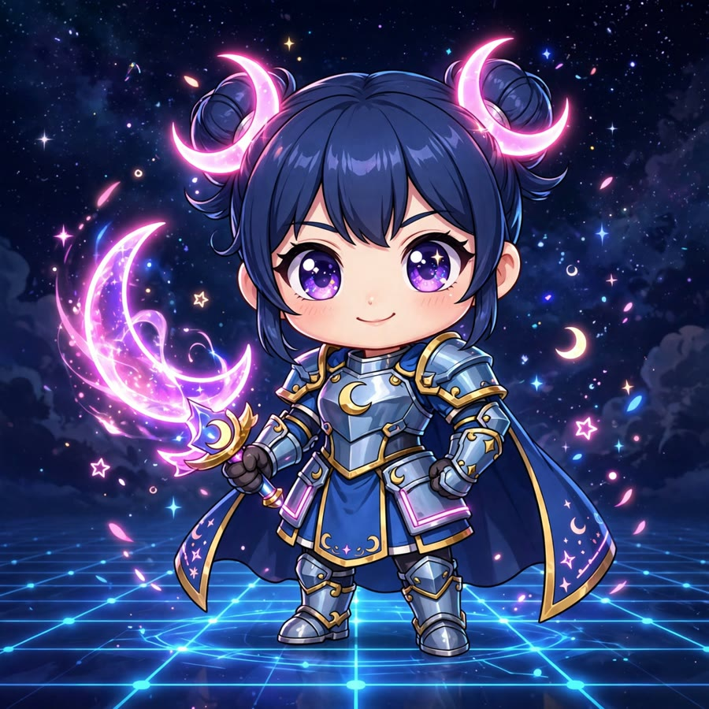
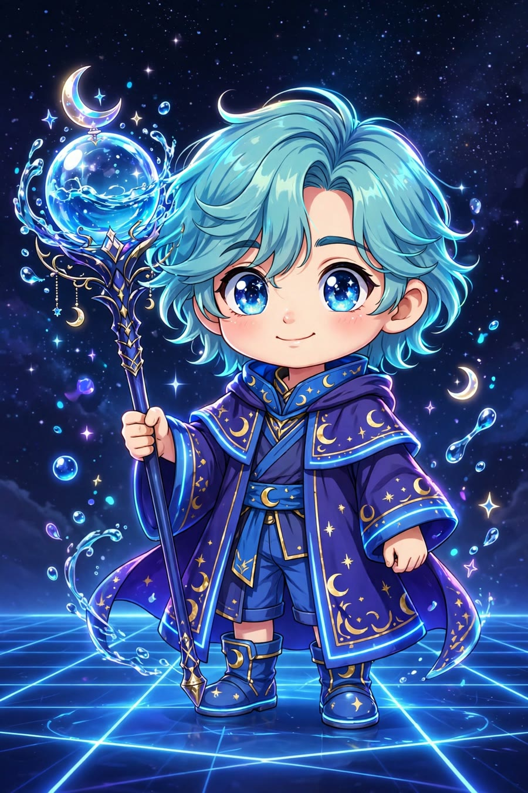
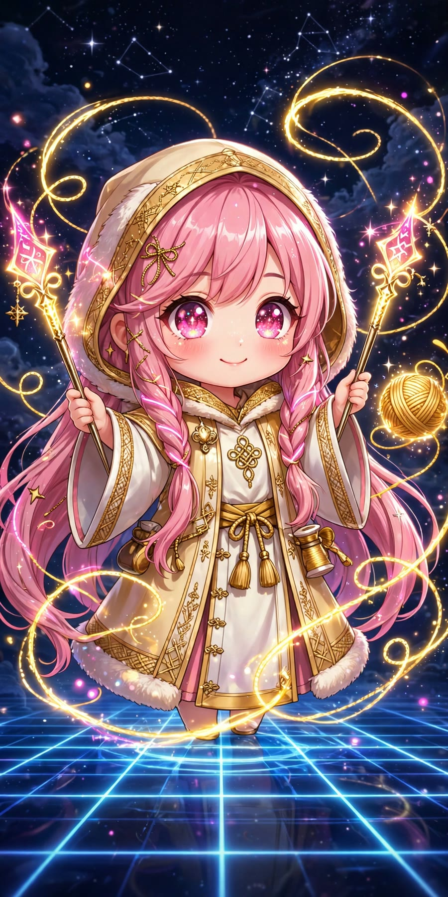
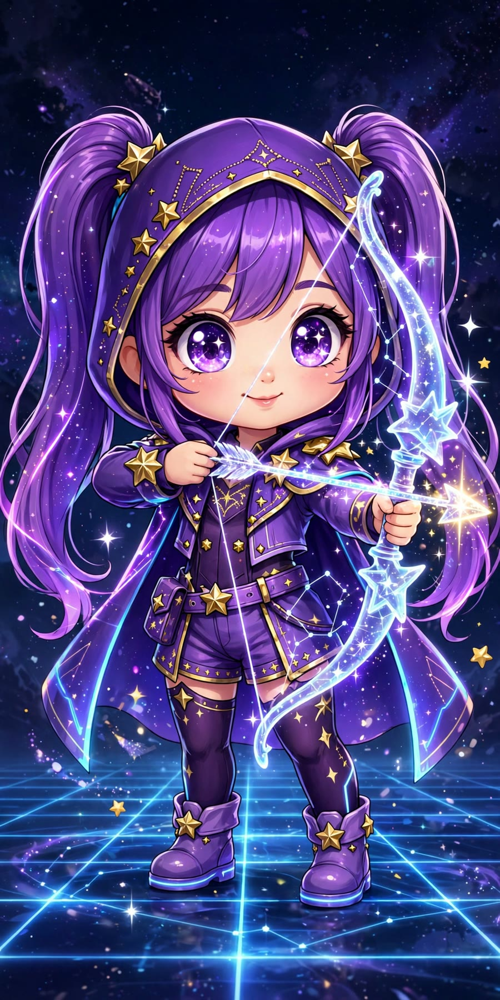
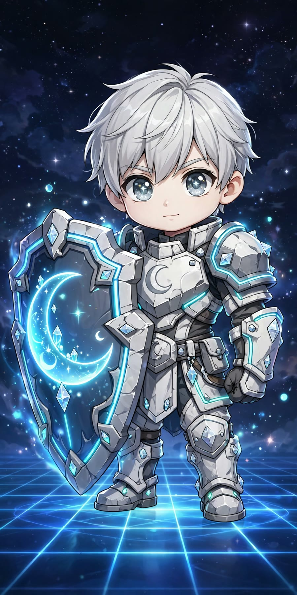
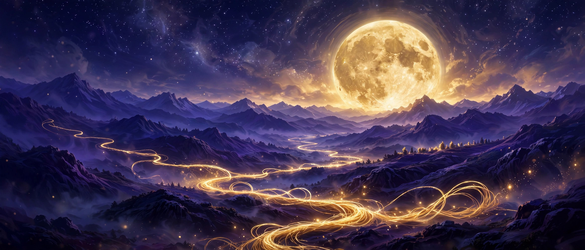

ELYSIA LUNAR
The moon of Elysia has shattered, and its five great seas drift apart — held together only by golden moon-thread. Become a Drifter, build your party of Moon Relic heroes, and fight under a moon that changes the world every 28 days.
A first look inside Elysia Lunar: adventure across the five shattered seas, party battles, and world boss raids under the golden moon.
The first Moon Relic collection: five heroes, five classes, one party. Moon Relics are the NFT heroes of Elysia Lunar — they persist through every Moonfall Reset, forever. Every account also starts with a free Drifter hero, so nobody needs to own a Relic to play.





Concept art — the Pale Golem, first world boss of the Mare of First Light. Elysia Lunar is played in parties of five: one of each class, built to cover each other's weaknesses.

Rotating moon bosses across the five realms. The Pale Wastes raid opens only at Full Moon — the hardest fights in Elysia, and the best loot.
The ranked arena ladder. Gear is normalised inside — skill and build decide who reaches the Top 300 before rankings lock on day 27.
Guilds of up to 40 Drifters — Lunar Covens — battle for territory on the Tidefall Coast during the Waxing phase of every cycle.
After the Pale Sundering, the moon's five maria became floating realms stitched together by golden moon-thread.

| Realm | Role | What happens there |
|---|---|---|
| Mare of First Light | Starter realm | Gentle tides, the Drifter tutorial, and the Pale Golem world boss. |
| Golden Thread Fields | Crafting heartland | Gathering, thread-crafting, and the player-driven materials economy. |
| Obsidian Highlands | High-level PvE | Elite hunts and rotating world bosses for geared parties. |
| Tidefall Coast | Coven war front | Territory control battles between Covens during the Waxing phase. |
| The Pale Wastes | Endgame raid realm | Opens only at Full Moon. The hardest fights in Elysia. |
Seasons are 28-day Lunar Cycles. When a cycle ends, the Moonfall Reset turns levels back to 1 and ordinary gear into Legacy Thread — but Moon Relics, titles and your Coven persist forever.
| Phase | Days | Focus |
|---|---|---|
| New Moon | 1–3 | World events open, double gathering, cycle quests |
| Waxing | 4–14 | Coven wars for Tidefall Coast territory |
| Full Moon | 15 | Colosseum finals + Pale Wastes raid opens |
| Waning | 16–28 | Arena grind; rankings lock day 27; Moonfall Reset |


Elysia Lunar the game is built around Elysia Lunar the token. $SIA has a fixed supply of 1,000,000,000 with no mint function — the game creates no new tokens, ever. 750,000,000 $SIA is locked in a vesting vault.
In-game, $SIA is the premium currency for Moon Relic minting and cosmetics, and the currency of season rewards. The everyday in-game currency is Moonshards, earned from the arena, dailies and world events, with a published per-cycle issuance that can only decrease over time.
Free to play, forever. The shop sells cosmetics and convenience only — never power.
Is the game playable now?
No — Elysia Lunar is in development. This site presents the game's world, heroes and systems; a playable browser beta (one realm, three classes, arena ladder) comes next, then the full five-realm launch and Cycle 1. All art on this page is concept art.
Do I need an NFT to play?
No. Every account starts with a free Drifter hero. Moon Relic NFTs are the collectible heroes — optional, permanent, and never required.
What happens to my heroes when a season ends?
Moon Relics, titles and Coven membership are permanent. Levels reset and ordinary gear converts to Legacy Thread (prestige currency).
Where are announcements posted?
Only on the official X account, @ElysiaLunarYarn. Beware of impersonators.